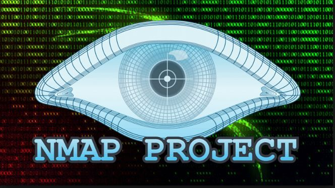
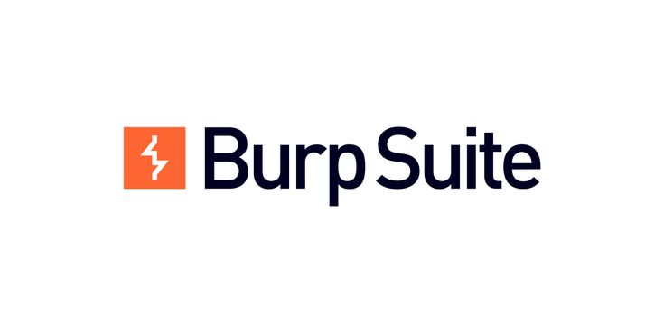
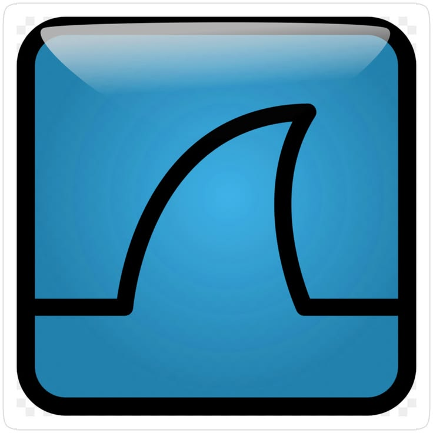
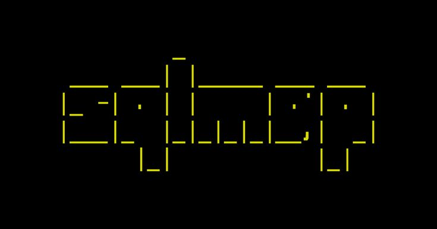
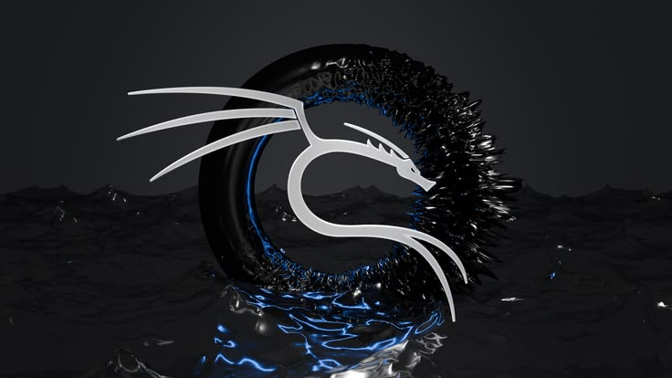

Cybersecurity Engineer | Offensive Security | Web Exploitation
I Built a powerful, multi-threaded reconnaissance tool for subdomain discovery and vulnerability mapping for futher investigation and exploitation.
Hands-on exploitation of Windows 7, OWASP Juice Shop, WebGoat and Metasploitable 2 vulnerabilities.
Hands-on exploitation of Capture the flag labs such as Hack The Box, Pico CTF and Try Hack Me.
I Built a powerful vulnerability assessment tool that fingerprints the whole system infrastructure for misconfiguration and possible exploit points.

Nmap

Burp Suite

Wireshark
Hydra
Metasploit
Jhon The Ripper

SQL Map

Linux
Custom scripts and automation tools used for ethical hacking, vulnerability scanning, and system testing.
Tools and workflows used to identify and responsibly report security vulnerabilities in web applications.
Hands-on practice environments for testing real-world security flaws and improving offensive security skills.
Python and JavaScript-based tools designed to speed up reconnaissance, scanning, and reporting processes.
Certified understanding of core cybersecurity principles, threats, and defensive strategies.
Proves you can troubleshoot, maintain, and support hardware, software, and basic network systems.
A Corevex Range Certificate holder signals a strong foundation in practical security skills and readiness.
In progress.
In progress.
Demonstrated the art and skill of Penetration testing/ hacking/ compromising /breaching systems, websites and networks which are misconfigured and vulnerable (Even secure systems can be breached).Skilled in using the top ranking Operating System used by ethical hackers, penetration testers, SOC analyst and Cybersecurity teams being Kali-Linux. Acquired the skill of intensive system, website and network spoofing, crawling and scanning using frameworks and programs pre installed in kal-linux such as Nmap, Nikto, Burpsuite and Wireshark along side with exploit frameworks such as Metasploit, My SQL Injection and BeEF. Also crack encrypted passwords or hash's using tools like Jhon the ripper, Hashcat and Hydra using bruteforce or dictionary method. Also perform phishing attacks using Social Engineering Toolkit and Zphisher .With the aid of this of tools and knowledge one can strive to do good and help organizations or individuals protect themselves from malicious activities portrayed by scammers and cyber attackers which steal money, sensitive data and users personal details and credentials.
Demonstrated the defensive measure of implementing a Honeypot to protect the real system from being attacked and providing us a chance to prevent/block or study the attackers behaviour and goal so that the system could be prepared for the intended attack. Managed to setup a Honeypot on my home-lab network on a virtual machine network and intentionally attacked the Honeypot posing as an attacker, and saw that the honeypot works perfectly it kept every log of my activities as i moved through the system.
Demonstrated the art and skill of using Hyper Text Markup Language (HTML), Cascading Styles (CSS), & Java Script (JS) which I learnt in order to accomplish the creation of this website. And also learnt about web extensions and hosting services. Now my website is fully functionable and accessible from anywhere remotely, with out it being active only on my localhost. Able to understand other web developers code , so it could be improved and debugged.
I consider this to be much more effective and easy to use than the common misunderstood pen test guide!!
Without wasting any time friend, here is how I usually conduct my own custom Web Penetration Test.....
"BONUS: This test is a Black Box pen test"...
Using a normal web browser and also using a different device except from your attack machine, check out the website by clicking around and try to find Input fields, Hidden pages, Admin portals, URL info disclosure, Login pages & Upload fields. This is done manually but effective thus we get crispy info about our target surface from a client perspective, hence we are also avoiding IDS (Intrusion Detection System) & IPS (Intrusion Prevention System) from detecting and blocking us before we could actually hit the server system, even if we get suspected the EDR, IDS & IPS would just be watching and keep track of our dummy IP ADDRESS from the device we used instead of our attack machine. This step is very crucial if you want to have more findings to investigate for vulnerabilities and exploit them to compromise the server system hence providing a POC (Proof Of Concept). MORE DETAIL, INFORMATION AND CONTEXT AVAILABLE IN MY YOUTUBE CHANNEL, LINK AVAILABLE AT THE CONTACT SECTION.
Now we start our deep information gathering/Mapping about our target. using an attack machine, I would recommend you use a Virtual Machine with separate a IP address from your Host, or using different proxy and Auto-Tor IP changer, This again provides extra anonymity from being Tracked, Flagged and Blocked by the victims defence mechanisms. For this intensive Reconnaissance we would use my own personal favourite Network Mapping Tool called "NMAP" readily available in Kali-Linux distro, if not available in your distro' use this command "sudo apt intsall nmap".For Kali-Linux, open the terminal and type "ping example.co.bw" the ping command sends "ICMP" echo requests to the victim to check if the server is alive, up and running. After getting received packets from the ping command confirming the server is alive' Now we use Nmap, type "nmap -sV -sS -O example.co.bw/" and hit enter to run it' -sV is for version detection -sS is a SYN,SYN ACK without finishing the 3-way-handshake with an ACK & -O is for operating system detection, lastly your target example.co.bw or 192.168.0.1 as IP address. Lets say nmap found intresting ports open with there versions including "port 21 for ftp (File Transmission Protocol) open with vsftpd 2.3.4 version running. Take note of the ftp version found from our nmap scan, because it likely has a vulnerability. MORE DETAIL, INFORMATION AND CONTEXT AVAILABLE IN MY YOUTUBE CHANNEL, LINK AVAILABLE AT THE CONTACT SECTION.
Now we can manually try to log in the ftp server checking if it allows anonymous logins, default username and password is anonymous. If getting in manually fails because the logins are changed from default by the admin, We will now use the version of the ftp server being vsftpd 2.3.4 checking and searching for CVE exploits on my favourite personal platforms I use such as Exploit database & CVE mitre searching for the specific service version we found "vsftpd". MORE DETAIL, INFORMATION AND CONTEXT AVAILABLE IN MY YOUTUBE CHANNEL, LINK AVAILABLE AT THE CONTACT SECTION.
We could alternatively search for an exploit on the Rapid7 framework Database of Metasploit. For this first open Metasploit in kali-Linux by typing "msfconsole" and after lunching Metasploit type "search vsftpd 2.3.4" if an exploit is present use the exploits with good ratings such as excellent and pick it, afterwards configure the exploit module e.g set RHOSTS and LHOSTS and simply type "exploit" or "run" to lunch your exploit and get a meterpreter reverse shell. After successfully getting a reverse shell you could literally cause damage because you are now inside the server. MORE DETAIL, INFORMATION AND CONTEXT AVAILABLE IN MY YOUTUBE CHANNEL, LINK AVAILABLE AT THE CONTACT SECTION.
Now here you could navigate and get usernames and their password hash keys we could later on crack using Hashcat or Jhon The Ripper for the advanced pen testers/Ethical hackers or simply use online systematic hash cracking stations (some I know are free).if you don't know the hash type use a tool in kali-Linux called "Hashid" or "Hash-identifier" to identify the hash type. Hence you could use the passwords to get into multiple users accounts and still cause more damage by stealing credentials and other passwords for other accounts, even migrate the server to your own which is very critical. Therefore the right manipulation of a simple vulnerability that has been exploited to gain a part of the system is subject to Lateral Movements, Privilege Escalation, Remote Code Execution and Intruder Persistence. MORE DETAIL, INFORMATION AND CONTEXT AVAILABLE IN MY YOUTUBE CHANNEL, LINK AVAILABLE AT THE CONTACT SECTION.
Identified findings and possible vulnerable points from a normal client user, identified findings from ports, identified and documented presentation of CVE, Description of possible damage that could be caused by the CVE identified, Sorting and scaling the CVE identified, Provide "POC" Proof Of Concept. For Mitigation we would implement the recommendation of updating and upgrading services running, suggest turning off unnecessary ports open, implementing a well-configured firewall and lastly the use of a strong multi-character long length password. "BONUS: All information shared here was based on multiple real word pen tests".MORE DETAIL, INFORMATION AND CONTEXT AVAILABLE IN MY YOUTUBE CHANNEL, LINK AVAILABLE AT THE CONTACT SECTION.
Email: karaboemma25@gmail.com
YouTube: kaysociety404
LinkIn: Karabo Kosi
Github: kaysociety